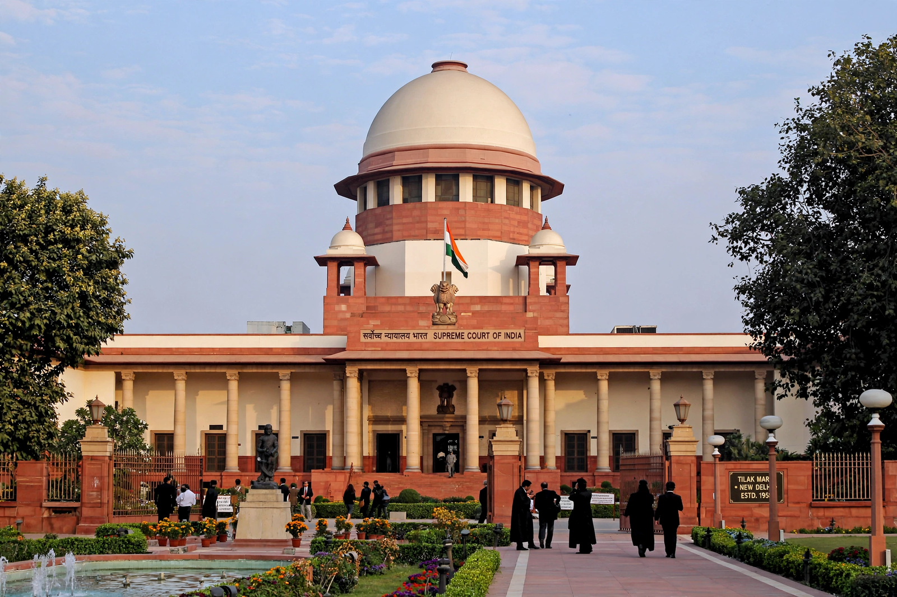

Basic structure doctrine
From Wikipedia, the free encyclopedia

The basic structure doctrine is a principle of Indian constitutional law holding that the Parliament may amend the Constitution of India but may not alter or destroy its 'basic structure' — features such as the supremacy of the Constitution, the rule of law, judicial review, secularism and the separation of powers. It was established by the Supreme Court of India in Kesavananda Bharati v. State of Kerala (1973).
Origins
The doctrine emerged from a series of cases over property rights and amendment power, beginning with Golaknath v. State of Punjab (1967), which held fundamental rights unamendable. Parliament responded with the 24th Amendment; in Kesavananda Bharati, a thirteen-judge bench — the largest in Indian history — ruled 7–6 that the amending power is wide but cannot damage the Constitution's basic structure.
Applications
The doctrine was used to strike down parts of the 39th Amendment in Indira Nehru Gandhi v. Raj Narain (1975), which had immunised the Prime Minister's election from judicial review; to protect judicial review in Minerva Mills v. Union of India (1980); and in I.R. Coelho (2007) to review laws placed in the Ninth Schedule. In 2015 the Court struck down the NJAC Act on basic-structure grounds, provoking debate about judicial supremacy.
Influence and debate
Versions of the doctrine have been adopted or considered in Bangladesh, Pakistan, Kenya and elsewhere. Supporters see it as a necessary guard against majoritarian constitutional capture; critics argue it is anti-democratic, textually ungrounded and leaves the 'basic structure' undefined except by the judges themselves.